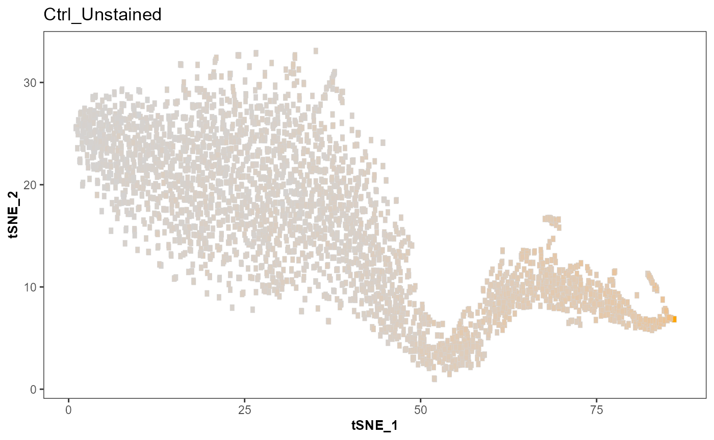
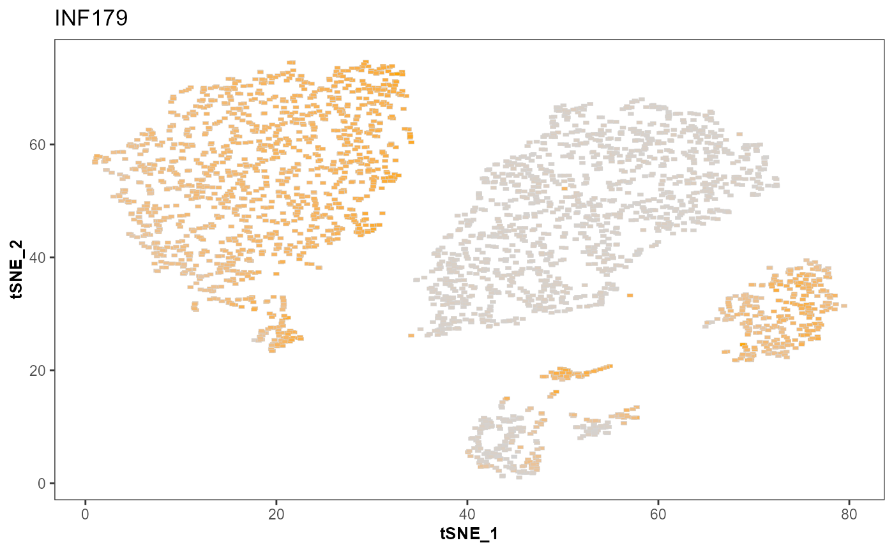
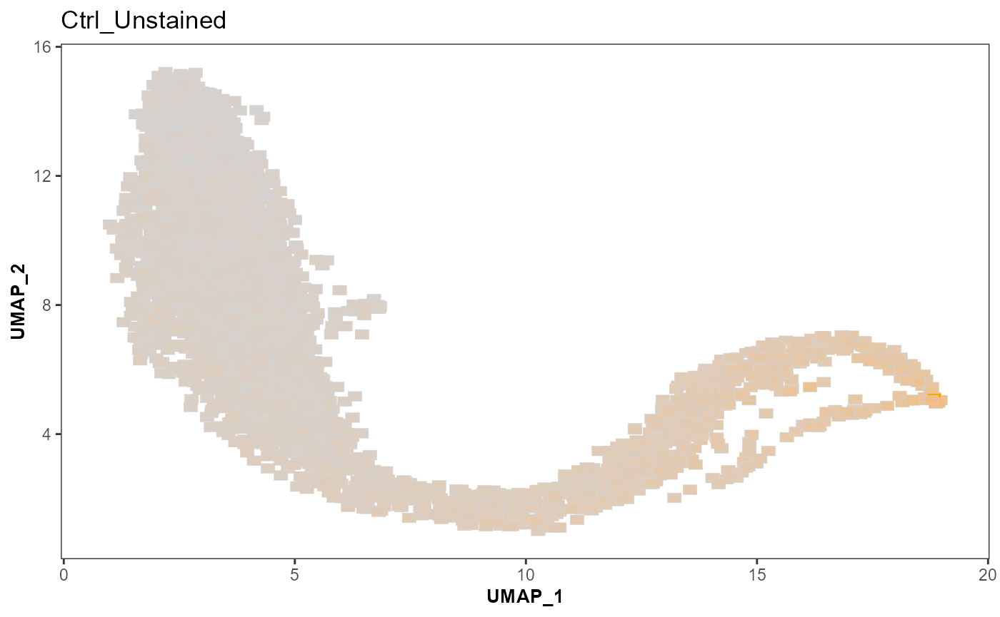
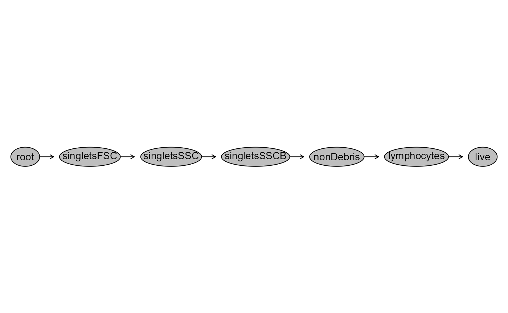
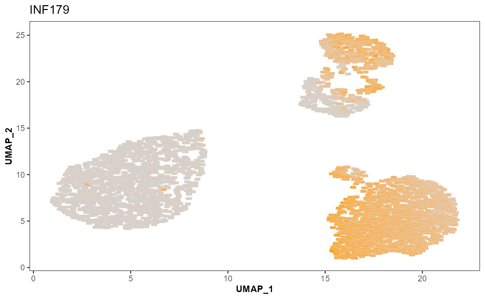
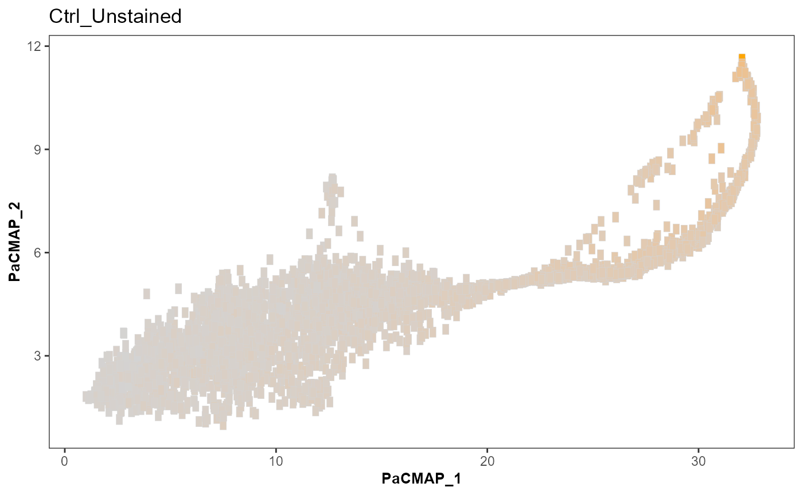
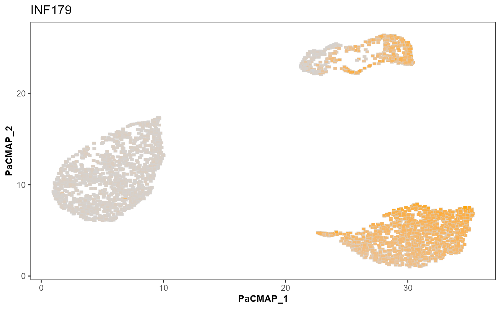
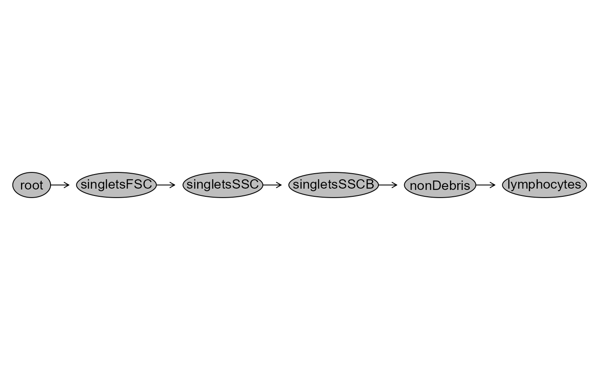
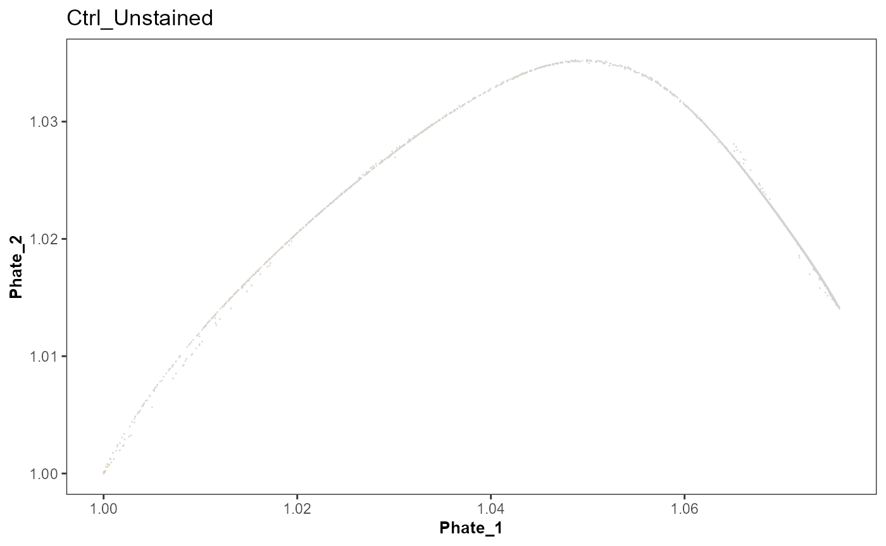
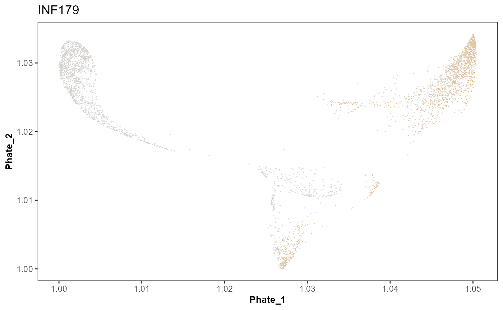

Dimensionality Visualization
David Rach
University of Maryland, Baltimoredrach@som.umaryland.edu
29 October 2024
Source:vignettes/DimensionalityVisualization.Rmd
DimensionalityVisualization.RmdIntroduction
Spectral Flow Cytometry data consist of many acquired cellular events, with increasing number of markers. Many unsupervised analysis approaches rely on clustering the markers on the basis of median fluorescent intensity. A common workflow step is to then project these cells onto a dimensionality visualized space using one of the various available algorithms. While this can provide useful information, we agree with Pachter labs points in their Specious Art Spatial Genomics paper highlighting ease of overinterpreting what may be sheer artefact noise.
Similarly, dimensionality visualization works on both unmixed files, as well as novel applications addressing unstained samples still in the raw form. To enable characterization of what actually ends up in these islands (whether brightness, unique signature, random noise) we have implemented dimensionality visualization for the most frequently used algorithms to facilitate their exploration in context of our paper.
While these are useful, we would like to reiterate, these wrappers are for exploratory/convenience purposes only, please refer to the original packages for any specialized argument implementation. We may modify them, so don’t build your own R package around our implementation. Instead, take advantage of the copyleft license nature of free and open-source software, fork it, modify it and include it in your own package.
Getting Started
Create a GatingSet
File_Location <- system.file("extdata", package = "Luciernaga")
FCS_Pattern <- ".fcs$"
FCS_Files <- list.files(path = File_Location, pattern = FCS_Pattern,
full.names = TRUE, recursive = FALSE)
head(FCS_Files[10:30], 20)
#> [1] "C:/Users/12692/AppData/Local/R/win-library/4.4/Luciernaga/extdata/21_Before.fcs"
#> [2] "C:/Users/12692/AppData/Local/R/win-library/4.4/Luciernaga/extdata/22_After.fcs"
#> [3] "C:/Users/12692/AppData/Local/R/win-library/4.4/Luciernaga/extdata/22_Before.fcs"
#> [4] "C:/Users/12692/AppData/Local/R/win-library/4.4/Luciernaga/extdata/23_After.fcs"
#> [5] "C:/Users/12692/AppData/Local/R/win-library/4.4/Luciernaga/extdata/23_Before.fcs"
#> [6] "C:/Users/12692/AppData/Local/R/win-library/4.4/Luciernaga/extdata/4BeadsUnstained(Beads).fcs"
#> [7] "C:/Users/12692/AppData/Local/R/win-library/4.4/Luciernaga/extdata/CCR4_BUV615(Beads).fcs"
#> [8] "C:/Users/12692/AppData/Local/R/win-library/4.4/Luciernaga/extdata/CCR4_BUV615(Cells).fcs"
#> [9] "C:/Users/12692/AppData/Local/R/win-library/4.4/Luciernaga/extdata/CCR6_BV786(Beads).fcs"
#> [10] "C:/Users/12692/AppData/Local/R/win-library/4.4/Luciernaga/extdata/CCR6_BV786(Cells).fcs"
#> [11] "C:/Users/12692/AppData/Local/R/win-library/4.4/Luciernaga/extdata/CCR7_BV650(Beads).fcs"
#> [12] "C:/Users/12692/AppData/Local/R/win-library/4.4/Luciernaga/extdata/CCR7_BV650(Cells).fcs"
#> [13] "C:/Users/12692/AppData/Local/R/win-library/4.4/Luciernaga/extdata/CD107a_APC-R700(Beads).fcs"
#> [14] "C:/Users/12692/AppData/Local/R/win-library/4.4/Luciernaga/extdata/CD107a_APC-R700(Cells).fcs"
#> [15] "C:/Users/12692/AppData/Local/R/win-library/4.4/Luciernaga/extdata/CD127_BV421(Beads).fcs"
#> [16] "C:/Users/12692/AppData/Local/R/win-library/4.4/Luciernaga/extdata/CD127_BV421(Cells).fcs"
#> [17] "C:/Users/12692/AppData/Local/R/win-library/4.4/Luciernaga/extdata/CD16_APC(Beads).fcs"
#> [18] "C:/Users/12692/AppData/Local/R/win-library/4.4/Luciernaga/extdata/CD16_APC(Cells).fcs"
#> [19] "C:/Users/12692/AppData/Local/R/win-library/4.4/Luciernaga/extdata/CD161_BV480(Beads).fcs"
#> [20] "C:/Users/12692/AppData/Local/R/win-library/4.4/Luciernaga/extdata/CD161_BV480(Cells).fcs"
UnstainedFCSFiles <- FCS_Files[grep("Unstained", FCS_Files)]
UnstainedCells <- UnstainedFCSFiles[-grep(
"Beads", UnstainedFCSFiles)]
MyCytoSet <- load_cytoset_from_fcs(UnstainedCells,
truncate_max_range = FALSE,
transform = FALSE)
MyCytoSet
#> A cytoset with 18 samples.
#>
#> column names:
#> Time, UV1-A, UV2-A, UV3-A, UV4-A, UV5-A, UV6-A, UV7-A, UV8-A, UV9-A, UV10-A, UV11-A, UV12-A, UV13-A, UV14-A, UV15-A, UV16-A, SSC-W, SSC-H, SSC-A, V1-A, V2-A, V3-A, V4-A, V5-A, V6-A, V7-A, V8-A, V9-A, V10-A, V11-A, V12-A, V13-A, V14-A, V15-A, V16-A, FSC-W, FSC-H, FSC-A, SSC-B-W, SSC-B-H, SSC-B-A, B1-A, B2-A, B3-A, B4-A, B5-A, B6-A, B7-A, B8-A, B9-A, B10-A, B11-A, B12-A, B13-A, B14-A, YG1-A, YG2-A, YG3-A, YG4-A, YG5-A, YG6-A, YG7-A, YG8-A, YG9-A, YG10-A, R1-A, R2-A, R3-A, R4-A, R5-A, R6-A, R7-A, R8-A
MyGatingSet <- GatingSet(MyCytoSet)
MyGatingSet
#> A GatingSet with 18 samples
FileLocation <- system.file("extdata", package = "Luciernaga")
MyGates <- fread(file.path(path = FileLocation,
pattern = 'Gates.csv'))
gt(MyGates)| alias | pop | parent | dims | gating_method | gating_args | collapseDataForGating | groupBy | preprocessing_method | preprocessing_args |
|---|---|---|---|---|---|---|---|---|---|
| singletsFSC | + | root | FSC-A,FSC-H | singletGate | FALSE | NA | NA | NA | |
| singletsSSC | + | singletsFSC | SSC-A,SSC-H | singletGate | FALSE | NA | NA | NA | |
| singletsSSCB | + | singletsSSC | SSC-A,SSC-B-A | singletGate | FALSE | NA | NA | NA | |
| nonDebris | + | singletsSSCB | FSC-A | gate_mindensity | FALSE | NA | NA | NA | |
| lymphocytes | + | nonDebris | FSC-A, SSC-A | flowClust | K=2, target=c(1e5, 5e4) | FALSE | NA | NA | NA |
MyGatingTemplate <- gatingTemplate(MyGates)
gt_gating(MyGatingTemplate, MyGatingSet)
MyGatingSet[[1]]
#> Sample: INF071_Ctrl_Unstained.fcs
#> GatingHierarchy with 6 gatesCreating a Gating Set Unmixed
Unmixed_FullStained <- FCS_Files[grep("Unmixed", FCS_Files)]
UnmixedCytoSet <- load_cytoset_from_fcs(Unmixed_FullStained,
truncate_max_range = FALSE,
transform = FALSE)
UnmixedGatingSet <- GatingSet(UnmixedCytoSet)
UnmixedGatingSet
#> A GatingSet with 4 samples
Markers <- colnames(UnmixedCytoSet)
KeptMarkers <- Markers[-grep(
"Time|FS|SC|SS|Original|-W$|-H$|AF", Markers)]
MyBiexponentialTransform <- flowjo_biexp_trans(channelRange = 256,
maxValue = 1000000,
pos = 4.5, neg = 0,
widthBasis = -1000)
TransformList <- transformerList(KeptMarkers, MyBiexponentialTransform)
UnmixedGatingSet <- transform(UnmixedGatingSet, TransformList)
FileLocation <- system.file("extdata", package = "Luciernaga")
UnmixedGates <- fread(file.path(path = FileLocation,
pattern = 'GatesUnmixed.csv'))
UnmixedGating <- gatingTemplate(UnmixedGates)
gt_gating(UnmixedGating, UnmixedGatingSet)Helper Functions
Utility_ColAppend
Originally an internal function supporting our dimensionality
visualization functions, Utility_ColAppend() appends new
data.frame columns to an .fcs file that contains the same number of rows
as a new marker/parameter. To do this, you feed the function a cytoset
object, a data.frame of the flowframe exprs data, and a data.frame of
the new data columns. Utility_ColAppend() then adds the
appropriate parameters and returns a flowframe object with these new
parameters added.
Since it has been highly useful to us, we are mentioning it here in case you need to append additional information/alternate dimensionality visualizations to your own .fcs files. We have tried to keep the return .fcs file compliant for ease of use in other software applications, but expect bugs to arise outside internal function purpose, so if you encounter a bug with this function, please report it via GitHub.
ff <- gs_pop_get_data(UnmixedGatingSet[1], subsets="live",
inverse.transform = FALSE)
BeforeParameters <- ff[[1, returnType = "flowFrame"]]
BeforeParameters
#> flowFrame object 'INF071_Ctrl_Tetramer_Unmixed.fcs'
#> with 10000 cells and 40 observables:
#> name desc range minRange maxRange
#> $P1 Time NA 952929 0 952929
#> $P2 SSC-W NA 4194303 0 4194303
#> $P3 SSC-H NA 4194303 0 4194303
#> $P4 SSC-A NA 4194303 0 4194303
#> $P5 FSC-W NA 4194303 0 4194303
#> ... ... ... ... ... ...
#> $P36 APC-R700-A CD107a 339.153 84.6477 339.153
#> $P37 Zombie NIR-A Viability 339.153 84.6477 339.153
#> $P38 APC-Fire 750-A CD27 339.153 84.6477 339.153
#> $P39 APC-Fire 810-A CD38 339.153 84.6477 339.153
#> $P40 AF-A NA 4194303.000 -111.0000 4194303.000
#> 442 keywords are stored in the 'description' slot
# Main Expression Data From Original
MainDataFrame <- as.data.frame(exprs(ff[[1]]), check.names = FALSE)
# Creating Artificial Data To Mimic Metadata to Append
NewData <- MainDataFrame %>% mutate(
ExposureStatus = sample(1:3, n(), replace = TRUE))
NewData <- NewData %>% select(ExposureStatus)
AfterParameters <- Utility_ColAppend(ff=ff, DF=MainDataFrame,
columnframe = NewData)
AfterParameters
#> flowFrame object 'INF071_Ctrl_Tetramer_Unmixed.fcs'
#> with 10000 cells and 41 observables:
#> name desc range minRange maxRange
#> $P1 Time NA 952929 0 952929
#> $P2 SSC-W NA 4194303 0 4194303
#> $P3 SSC-H NA 4194303 0 4194303
#> $P4 SSC-A NA 4194303 0 4194303
#> $P5 FSC-W NA 4194303 0 4194303
#> ... ... ... ... ... ...
#> $P37 Zombie NIR-A Viability 339.153 84.6477 339.153
#> $P38 APC-Fire 750-A CD27 339.153 84.6477 339.153
#> $P39 APC-Fire 810-A CD38 339.153 84.6477 339.153
#> $P40 AF-A NA 4194303.000 -111.0000 4194303.000
#> $P41 ExposureStatus NA 3.000 1.0000 3.000
#> 450 keywords are stored in the 'description' slotFor anyone wanting to continue on and create an .fcs file from the flowframe, example code is provided below:
outpath <- file.path("C:", "Users", "JohnDoe", "Desktop")
Name <- flowWorkspace::keyword(AfterParameters, "GROUPNAME")
TheFileName <- paste0(Name, "_Appended.fcs")
fileSpot <- file.path(outpath, TheFileName)
fileSpot
#> [1] "C:/Users/JohnDoe/Desktop/INF071_Appended.fcs"
# flowCore::write.FCS(AfterParameters, filename = fileSpot, delimiter="#")Utility_Downsample
For many dimensionality visualization protocols, it’s recommended
that you downsample so that each specimen has roughly similar
representation in the final plot. While this can be helpful when you
have some specimens with 10,000 cells, and others with a million cells,
it encounters issues when some specimens have millions but other samples
have just 200 cells. Consequently, deciding whether to down-sample is a
decision that you need to make and justify. We have implemented
Utility_Downsample() to facilitate the process.
# plot(UnmixedGatingSet)
CountData <- gs_pop_get_count_fast(UnmixedGatingSet)
CountData %>% filter(Population %in% "/singletsFSC/singletsSSC/singletsSSCB/nonDebris/lymphocytes/live") %>%
select(name, Count)
#> name Count
#> <char> <int>
#> 1: INF071_Ctrl_Tetramer_Unmixed.fcs 3035
#> 2: INF149_Ctrl_Tetramer_Unmixed.fcs 2768
#> 3: INF179_Ctrl_Tetramer_Unmixed.fcs 3317
#> 4: ND050_15_Ctrl_Tetramer_Unmixed.fcs 4432
#Single Sample Returned as a data.frame
removestrings <- c("DTR_2023_ILT_15_Tetramers-",
"-Ctrl_Tetramer_Unmixed", ".fcs")
SingleSample <- Utility_Downsample(UnmixedGatingSet[1],
sample.name = "GROUPNAME",
removestrings=removestrings,
subsets = "live", subsample = 2500,
internal = FALSE, export = FALSE)
SingleSample
#> flowFrame object 'INF071_Ctrl_Tetramer_Unmixed.fcs'
#> with 2500 cells and 40 observables:
#> name desc range minRange maxRange
#> $P1 Time NA 952929 0 952929
#> $P2 SSC-W NA 4194303 0 4194303
#> $P3 SSC-H NA 4194303 0 4194303
#> $P4 SSC-A NA 4194303 0 4194303
#> $P5 FSC-W NA 4194303 0 4194303
#> ... ... ... ... ... ...
#> $P36 APC-R700-A CD107a 339.153 84.6477 339.153
#> $P37 Zombie NIR-A Viability 339.153 84.6477 339.153
#> $P38 APC-Fire 750-A CD27 339.153 84.6477 339.153
#> $P39 APC-Fire 810-A CD38 339.153 84.6477 339.153
#> $P40 AF-A NA 4194303.000 -111.0000 4194303.000
#> 442 keywords are stored in the 'description' slot
# Multiple Samples
MultipleSamples <- map(.x=UnmixedGatingSet, .f=Utility_Downsample,
sample.name = "GROUPNAME", removestrings=removestrings,
subsets = "live", subsample = 2500, internal = FALSE,
export = FALSE)
MultipleSamples
#> [[1]]
#> flowFrame object 'INF071_Ctrl_Tetramer_Unmixed.fcs'
#> with 2500 cells and 40 observables:
#> name desc range minRange maxRange
#> $P1 Time NA 952929 0 952929
#> $P2 SSC-W NA 4194303 0 4194303
#> $P3 SSC-H NA 4194303 0 4194303
#> $P4 SSC-A NA 4194303 0 4194303
#> $P5 FSC-W NA 4194303 0 4194303
#> ... ... ... ... ... ...
#> $P36 APC-R700-A CD107a 339.153 84.6477 339.153
#> $P37 Zombie NIR-A Viability 339.153 84.6477 339.153
#> $P38 APC-Fire 750-A CD27 339.153 84.6477 339.153
#> $P39 APC-Fire 810-A CD38 339.153 84.6477 339.153
#> $P40 AF-A NA 4194303.000 -111.0000 4194303.000
#> 442 keywords are stored in the 'description' slot
#>
#> [[2]]
#> flowFrame object 'INF149_Ctrl_Tetramer_Unmixed.fcs'
#> with 2500 cells and 40 observables:
#> name desc range minRange maxRange
#> $P1 Time NA 1256984 0 1256984
#> $P2 SSC-W NA 4194303 0 4194303
#> $P3 SSC-H NA 4194303 0 4194303
#> $P4 SSC-A NA 4194303 0 4194303
#> $P5 FSC-W NA 4194303 0 4194303
#> ... ... ... ... ... ...
#> $P36 APC-R700-A CD107a 339.153 84.6477 339.153
#> $P37 Zombie NIR-A Viability 339.153 84.6477 339.153
#> $P38 APC-Fire 750-A CD27 339.153 84.6477 339.153
#> $P39 APC-Fire 810-A CD38 339.153 84.6477 339.153
#> $P40 AF-A NA 4194303.000 -111.0000 4194303.000
#> 442 keywords are stored in the 'description' slot
#>
#> [[3]]
#> flowFrame object 'INF179_Ctrl_Tetramer_Unmixed.fcs'
#> with 2500 cells and 40 observables:
#> name desc range minRange maxRange
#> $P1 Time NA 1169661 0 1169661
#> $P2 SSC-W NA 4194303 0 4194303
#> $P3 SSC-H NA 4194303 0 4194303
#> $P4 SSC-A NA 4194303 0 4194303
#> $P5 FSC-W NA 4194303 0 4194303
#> ... ... ... ... ... ...
#> $P36 APC-R700-A CD107a 339.153 84.6477 339.153
#> $P37 Zombie NIR-A Viability 339.153 84.6477 339.153
#> $P38 APC-Fire 750-A CD27 339.153 84.6477 339.153
#> $P39 APC-Fire 810-A CD38 339.153 84.6477 339.153
#> $P40 AF-A NA 4194303.000 -111.0000 4194303.000
#> 442 keywords are stored in the 'description' slot
#>
#> [[4]]
#> flowFrame object 'ND050_15_Ctrl_Tetramer_Unmixed.fcs'
#> with 2500 cells and 40 observables:
#> name desc range minRange maxRange
#> $P1 Time NA 883825 0 883825
#> $P2 SSC-W NA 4194303 0 4194303
#> $P3 SSC-H NA 4194303 0 4194303
#> $P4 SSC-A NA 4194303 0 4194303
#> $P5 FSC-W NA 4194303 0 4194303
#> ... ... ... ... ... ...
#> $P36 APC-R700-A CD107a 339.153 84.6477 339.153
#> $P37 Zombie NIR-A Viability 339.153 84.6477 339.153
#> $P38 APC-Fire 750-A CD27 339.153 84.6477 339.153
#> $P39 APC-Fire 810-A CD38 339.153 84.6477 339.153
#> $P40 AF-A NA 4194303.000 -111.0000 4194303.000
#> 442 keywords are stored in the 'description' slotUtility_Concatinate
A common feature of dimensionality visualization approaches for cytometry data is concatenating different samples into a single file. This sometimes includes first downsampling to an equivalent number of cells in a particular cell subset, so as to not overly influence the result on the basis of a single cell subset. Similarly, this can be done before or after cells are normalized using one of the various algorithms.
To facilitate this process, we have implemented the
Utility_Concatinate() function. Unlike other approaches, we
implemented it at the GatingSet level, allowing to merge only cells at
the gating node of interest into active memory. The final file can then
be saved as it’s own .fcs file. We have attempted to retain FCS format,
so that it can be used across software without issues. If you encounter
issues, please reach out!
removestrings <- c("DTR_", ".fcs")
StorageLocation <- file.path("C:", "Users", "JohnDoe", "Desktop")
#Return Types: "data.frame", "flow.frame", "fcs"
ConcatinatedReturn <- Utility_Concatinate(gs=UnmixedGatingSet,
sample.name = "GROUPNAME",
removestrings=removestrings,
subsets="live", subsample = 2000,
ReturnType = "flow.frame",
newName = "MyConcatinatedFile",
outpath = StorageLocation,
export = FALSE)
#> INF071 has been processed
#> INF149 has been processed
#> INF179 has been processed
#> ND050_15 has been processed
ConcatinatedReturn
#> flowFrame object 'INF071_Ctrl_Tetramer_Unmixed.fcs'
#> with 8000 cells and 41 observables:
#> name desc range minRange maxRange
#> $P1 Time NA 952929 0 952929
#> $P2 SSC-W NA 4194303 0 4194303
#> $P3 SSC-H NA 4194303 0 4194303
#> $P4 SSC-A NA 4194303 0 4194303
#> $P5 FSC-W NA 4194303 0 4194303
#> ... ... ... ... ... ...
#> $P37 Zombie NIR-A Viability 339.153 84.6477 339.153
#> $P38 APC-Fire 750-A CD27 339.153 84.6477 339.153
#> $P39 APC-Fire 810-A CD38 339.153 84.6477 339.153
#> $P40 AF-A NA 4194303.000 -111.0000 4194303.000
#> $P41 specimen NA 4.000 1.0000 4.000
#> 450 keywords are stored in the 'description' slotUtility_tSNE
Now that we have a GatingSet containing our raw .fcs files, let’s
figure out what markers/parameters are present, and save the detectors
as “KeptMarkers”. From there, let’s identify the unstained file within
the GatingSet. After this we will run a tSNE on the provided data at the
lymphocyte gating level, using the Utility_tSNE() function.
This function has the ability to return a .fcs file (which is what we
typically use). For the purpose of this vignette, it returns as a
FlowCore flowframe. For use with our visualization functions that work
on GatingSet objects, we transform to a cytoframe, add to a new cytoset
and then convert that into a gating set. Finally we visualize using
Utility_ThirdColorPlots()
Markers <- colnames(MyCytoSet)
KeptMarkers <- Markers[-grep("Time|FS|SC|SS|Original|-W$|-H$|AF", Markers)]
KeptMarkers
#> [1] "UV1-A" "UV2-A" "UV3-A" "UV4-A" "UV5-A" "UV6-A" "UV7-A" "UV8-A"
#> [9] "UV9-A" "UV10-A" "UV11-A" "UV12-A" "UV13-A" "UV14-A" "UV15-A" "UV16-A"
#> [17] "V1-A" "V2-A" "V3-A" "V4-A" "V5-A" "V6-A" "V7-A" "V8-A"
#> [25] "V9-A" "V10-A" "V11-A" "V12-A" "V13-A" "V14-A" "V15-A" "V16-A"
#> [33] "B1-A" "B2-A" "B3-A" "B4-A" "B5-A" "B6-A" "B7-A" "B8-A"
#> [41] "B9-A" "B10-A" "B11-A" "B12-A" "B13-A" "B14-A" "YG1-A" "YG2-A"
#> [49] "YG3-A" "YG4-A" "YG5-A" "YG6-A" "YG7-A" "YG8-A" "YG9-A" "YG10-A"
#> [57] "R1-A" "R2-A" "R3-A" "R4-A" "R5-A" "R6-A" "R7-A" "R8-A"
pData(MyGatingSet[[3]]) %>% pull(name)
#> [1] "INF149_Ctrl_Unstained.fcs"
nrow(MyGatingSet[[3]])
#> $INF149_Ctrl_Unstained.fcs
#> [1] 10000
plot(MyGatingSet)
tSNE_Output <- Utility_tSNE(x=MyGatingSet[[3]], sample.name = "GUID",
removestrings=c("_Cells", ".fcs"),
subset = "nonDebris", columns=KeptMarkers,
export=FALSE)
cf <- flowFrame_to_cytoframe(tSNE_Output)
TheNewCS <- cytoset()
cs_add_cytoframe(cs=TheNewCS, sn="Test", cf=cf)
NewGatingSet <- GatingSet(TheNewCS)
TSNEPlot <- Utility_ThirdColorPlots(x=NewGatingSet[[1]], subset = "root",
xaxis="tSNE_1", yaxis = "tSNE_2",
zaxis ="B3-A", splitpoint = "continuous",
sample.name = "TUBENAME",
removestrings = c("Dimensionality", ".fcs"),
thecolor = "orange", tilesize = 0.6)
#> Splitpoint is a continuous
TSNEPlot 
We can now repeat the previous step, but using our Unmixed file
GatingSet. The process is similar, identifying markers present in the
.fcs file (fluorophores in this case), selecting our markers of
interest, and from there passing to the Utility_tSNE()
function.
Markers <- colnames(UnmixedCytoSet)
KeptMarkers <- Markers[-grep("Time|FS|SC|SS|Original|-W$|-H$|AF", Markers)]
SubsetMarkers <- c("BUV496-A", "BUV805-A", "Pacific Blue-A", "BV711-A",
"BV786-A", "Spark Blue 550-A", "PE-A", "APC-Fire 750-A")
pData(UnmixedGatingSet[[3]]) %>% pull(name)
#> [1] "INF179_Ctrl_Tetramer_Unmixed.fcs"
nrow(UnmixedGatingSet[[3]])
#> $INF179_Ctrl_Tetramer_Unmixed.fcs
#> [1] 10000
plot(UnmixedGatingSet)
removestrings <- c(".fcs")
tSNE_Output <- Utility_tSNE(x=UnmixedGatingSet[[3]], sample.name = "TUBENAME", removestrings=removestrings, subset = "live", columns=SubsetMarkers, export=FALSE)
#BUGGED: flowCore_$P42Rmax not contained in Text section!
cf <- flowFrame_to_cytoframe(tSNE_Output)
TheNewCS <- cytoset()
cs_add_cytoframe(cs=TheNewCS, sn="Test", cf=cf)
NewGatingSet <- GatingSet(TheNewCS)
Sample_TSNEPlot <- Utility_ThirdColorPlots(x=NewGatingSet[[1]], subset = "root",
xaxis="tSNE_1", yaxis = "tSNE_2",
zaxis ="Spark Blue 550-A",
splitpoint = "continuous",
sample.name = "GROUPNAME",
removestrings = removestrings,
thecolor = "orange", tilesize = 0.6)
#> Splitpoint is a continuous
Sample_TSNEPlot 
Utility_UMAP
Now that we have a GatingSet containing our raw .fcs files, let’s
figure out what markers/parameters are present, and save the detectors
as “KeptMarkers”. From there, let’s identify the unstained file within
the GatingSet. After this we will run a tSNE on the provided data at the
lymphocyte gating level, using the Utility_UMAP() function.
This function has the ability to return a .fcs file (which is what we
typically use). For the purpose of this vignette, it returns as a
FlowCore flowframe. For use with our visualization functions that work
on GatingSet objects, we transform to a cytoframe, add to a new cytoset
and then convert that into a gating set. Finally we visualize using
Utility_ThirdColorPlots()
Markers <- colnames(MyCytoSet)
KeptMarkers <- Markers[-grep("Time|FS|SC|SS|Original|-W$|-H$|AF", Markers)]
KeptMarkers
#> [1] "UV1-A" "UV2-A" "UV3-A" "UV4-A" "UV5-A" "UV6-A" "UV7-A" "UV8-A"
#> [9] "UV9-A" "UV10-A" "UV11-A" "UV12-A" "UV13-A" "UV14-A" "UV15-A" "UV16-A"
#> [17] "V1-A" "V2-A" "V3-A" "V4-A" "V5-A" "V6-A" "V7-A" "V8-A"
#> [25] "V9-A" "V10-A" "V11-A" "V12-A" "V13-A" "V14-A" "V15-A" "V16-A"
#> [33] "B1-A" "B2-A" "B3-A" "B4-A" "B5-A" "B6-A" "B7-A" "B8-A"
#> [41] "B9-A" "B10-A" "B11-A" "B12-A" "B13-A" "B14-A" "YG1-A" "YG2-A"
#> [49] "YG3-A" "YG4-A" "YG5-A" "YG6-A" "YG7-A" "YG8-A" "YG9-A" "YG10-A"
#> [57] "R1-A" "R2-A" "R3-A" "R4-A" "R5-A" "R6-A" "R7-A" "R8-A"
pData(MyGatingSet[[3]]) %>% pull(name)
#> [1] "INF149_Ctrl_Unstained.fcs"
nrow(MyGatingSet[[3]])
#> $INF149_Ctrl_Unstained.fcs
#> [1] 10000
plot(MyGatingSet)
UMAP_Output <- Utility_UMAP(x=MyGatingSet[[3]], sample.name="GUID",
removestrings=c("_Cells", ".fcs"),
subset="nonDebris", columns=KeptMarkers,
export=FALSE)
cf <- flowFrame_to_cytoframe(UMAP_Output)
TheNewCS <- cytoset()
cs_add_cytoframe(cs=TheNewCS, sn="Test", cf=cf)
NewGatingSet <- GatingSet(TheNewCS)
UMAPPlot <- Utility_ThirdColorPlots(x=NewGatingSet[[1]], subset = "root",
xaxis="UMAP_1", yaxis = "UMAP_2",
zaxis ="B3-A", splitpoint = "continuous",
sample.name = "TUBENAME",
removestrings = c("Dimensionality", ".fcs"),
thecolor = "orange", tilesize = 0.3)
#> Splitpoint is a continuous
UMAPPlot
We can now repeat the previous step, but using our Unmixed file
GatingSet. The process is similar, identifying markers present in the
.fcs file (fluorophores in this case), selecting our markers of
interest, and from there passing to the Utility_UMAP()
function.
Markers <- colnames(UnmixedCytoSet)
KeptMarkers <- Markers[-grep("Time|FS|SC|SS|Original|-W$|-H$|AF", Markers)]
SubsetMarkers <- c("BUV496-A", "BUV805-A", "Pacific Blue-A", "BV711-A",
"BV786-A", "Spark Blue 550-A", "PE-A", "APC-Fire 750-A")
pData(UnmixedGatingSet[[3]]) %>% pull(name)
#> [1] "INF179_Ctrl_Tetramer_Unmixed.fcs"
nrow(UnmixedGatingSet[[3]])
#> $INF179_Ctrl_Tetramer_Unmixed.fcs
#> [1] 10000
plot(UnmixedGatingSet)
removestrings <- c(".fcs")
UMAP_Output <- Utility_UMAP(x=UnmixedGatingSet[[3]], sample.name="GUID", removestrings=removestrings, subset="live", columns=SubsetMarkers, export=FALSE)
cf <- flowFrame_to_cytoframe(UMAP_Output)
TheNewCS <- cytoset()
cs_add_cytoframe(cs=TheNewCS, sn="Test", cf=cf)
NewGatingSet <- GatingSet(TheNewCS)
Sample_UMAPPlot <- Utility_ThirdColorPlots(x=NewGatingSet[[1]], subset = "root",
xaxis="UMAP_1", yaxis = "UMAP_2",
zaxis ="Spark Blue 550-A",
splitpoint = "continuous",
sample.name = "GROUPNAME",
removestrings = c("Dimensionality", ".fcs"),
thecolor = "orange", tilesize = 0.3)
#> Splitpoint is a continuous
Sample_UMAPPlot
## Utility_PaCMAPUnlike the other dimensionality visualization algorithms that are
implemented in R, both PaCMAP and PHATE are primarily implemented in
Python. Utilizing basilisk package, we implement method to
facilitate the plot generation isolated within the Luciernaga
environment.
Repeating similar steps as with the tSNE and UMAP examples above for both raw and unmixed data:
Markers <- colnames(MyCytoSet)
KeptMarkers <- Markers[-grep("Time|FS|SC|SS|Original|-W$|-H$|AF", Markers)]
KeptMarkers
#> [1] "UV1-A" "UV2-A" "UV3-A" "UV4-A" "UV5-A" "UV6-A" "UV7-A" "UV8-A"
#> [9] "UV9-A" "UV10-A" "UV11-A" "UV12-A" "UV13-A" "UV14-A" "UV15-A" "UV16-A"
#> [17] "V1-A" "V2-A" "V3-A" "V4-A" "V5-A" "V6-A" "V7-A" "V8-A"
#> [25] "V9-A" "V10-A" "V11-A" "V12-A" "V13-A" "V14-A" "V15-A" "V16-A"
#> [33] "B1-A" "B2-A" "B3-A" "B4-A" "B5-A" "B6-A" "B7-A" "B8-A"
#> [41] "B9-A" "B10-A" "B11-A" "B12-A" "B13-A" "B14-A" "YG1-A" "YG2-A"
#> [49] "YG3-A" "YG4-A" "YG5-A" "YG6-A" "YG7-A" "YG8-A" "YG9-A" "YG10-A"
#> [57] "R1-A" "R2-A" "R3-A" "R4-A" "R5-A" "R6-A" "R7-A" "R8-A"
pData(MyGatingSet[[3]]) %>% pull(name)
#> [1] "INF149_Ctrl_Unstained.fcs"
nrow(MyGatingSet[[3]])
#> $INF149_Ctrl_Unstained.fcs
#> [1] 10000
plot(MyGatingSet)
PaCMAP_Output <- Utility_PaCMAP(x=MyGatingSet[[3]], sample.name="GUID",
removestrings=c("_Cells", ".fcs"),
subset="nonDebris", columns=KeptMarkers,
export=FALSE)
cf <- flowFrame_to_cytoframe(PaCMAP_Output)
TheNewCS <- cytoset()
cs_add_cytoframe(cs=TheNewCS, sn="Test", cf=cf)
NewGatingSet <- GatingSet(TheNewCS)
PaCMAPPlot <- Utility_ThirdColorPlots(x=NewGatingSet[[1]], subset = "root",
xaxis="PaCMAP_1", yaxis = "PaCMAP_2",
zaxis ="B3-A", splitpoint = "continuous",
sample.name = "TUBENAME",
removestrings = c("Dimensionality", ".fcs"),
thecolor = "orange", tilesize = 0.3)
#> Splitpoint is a continuous
PaCMAPPlot
Markers <- colnames(UnmixedCytoSet)
KeptMarkers <- Markers[-grep("Time|FS|SC|SS|Original|-W$|-H$|AF", Markers)]
SubsetMarkers <- c("BUV496-A", "BUV805-A", "Pacific Blue-A", "BV711-A",
"BV786-A", "Spark Blue 550-A", "PE-A", "APC-Fire 750-A")
pData(UnmixedGatingSet[[3]]) %>% pull(name)
#> [1] "INF179_Ctrl_Tetramer_Unmixed.fcs"
nrow(UnmixedGatingSet[[3]])
#> $INF179_Ctrl_Tetramer_Unmixed.fcs
#> [1] 10000
plot(UnmixedGatingSet)
removestrings <- c(".fcs")
PaCMAP_Output <- Utility_PaCMAP(x=UnmixedGatingSet[[3]], sample.name="GUID",
removestrings=removestrings, subset="live",
columns=SubsetMarkers, export=FALSE)
cf <- flowFrame_to_cytoframe(PaCMAP_Output)
TheNewCS <- cytoset()
cs_add_cytoframe(cs=TheNewCS, sn="Test", cf=cf)
NewGatingSet <- GatingSet(TheNewCS)
Sample_PaCMAPPlot <- Utility_ThirdColorPlots(x=NewGatingSet[[1]], subset = "root",
xaxis="PaCMAP_1", yaxis = "PaCMAP_2",
zaxis ="Spark Blue 550-A",
splitpoint = "continuous",
sample.name = "GROUPNAME",
removestrings = c("Dimensionality", ".fcs"),
thecolor = "orange", tilesize = 0.3)
#> Splitpoint is a continuous
Sample_PaCMAPPlot
Utility_PHATE
And similarly for PHATE, with downsampling for brevity:
Markers <- colnames(MyCytoSet)
KeptMarkers <- Markers[-grep("Time|FS|SC|SS|Original|-W$|-H$|AF", Markers)]
KeptMarkers
#> [1] "UV1-A" "UV2-A" "UV3-A" "UV4-A" "UV5-A" "UV6-A" "UV7-A" "UV8-A"
#> [9] "UV9-A" "UV10-A" "UV11-A" "UV12-A" "UV13-A" "UV14-A" "UV15-A" "UV16-A"
#> [17] "V1-A" "V2-A" "V3-A" "V4-A" "V5-A" "V6-A" "V7-A" "V8-A"
#> [25] "V9-A" "V10-A" "V11-A" "V12-A" "V13-A" "V14-A" "V15-A" "V16-A"
#> [33] "B1-A" "B2-A" "B3-A" "B4-A" "B5-A" "B6-A" "B7-A" "B8-A"
#> [41] "B9-A" "B10-A" "B11-A" "B12-A" "B13-A" "B14-A" "YG1-A" "YG2-A"
#> [49] "YG3-A" "YG4-A" "YG5-A" "YG6-A" "YG7-A" "YG8-A" "YG9-A" "YG10-A"
#> [57] "R1-A" "R2-A" "R3-A" "R4-A" "R5-A" "R6-A" "R7-A" "R8-A"
pData(MyGatingSet[[3]]) %>% pull(name)
#> [1] "INF149_Ctrl_Unstained.fcs"
nrow(MyGatingSet[[3]])
#> $INF149_Ctrl_Unstained.fcs
#> [1] 10000
plot(MyGatingSet)
Phate_Output <- Utility_Phate(x=MyGatingSet[[3]], sample.name="GUID",
removestrings=c("_Cells", ".fcs"),
subset="nonDebris", subsample=15000,
columns=KeptMarkers,
export=FALSE)
#> Calculating PHATE...
#> Running PHATE on 3303 observations and 64 variables.
#> Calculating graph and diffusion operator...
#> Calculating KNN search...
#> Calculated KNN search in 0.70 seconds.
#> Calculating affinities...
#> Calculated affinities in 1.72 seconds.
#> Calculated graph and diffusion operator in 2.49 seconds.
#> Calculating landmark operator...
#> Calculating SVD...
#> Calculated SVD in 1.16 seconds.
#> Calculating KMeans...
#> Calculated KMeans in 3.47 seconds.
#> Calculated landmark operator in 6.17 seconds.
#> Calculating optimal t...
#> Automatically selected t = 23
#> Calculated optimal t in 3.05 seconds.
#> Calculating diffusion potential...
#> Calculated diffusion potential in 2.18 seconds.
#> Calculating metric MDS...
#> Calculated metric MDS in 4.49 seconds.
#> Calculated PHATE in 18.40 seconds.
cf <- flowFrame_to_cytoframe(Phate_Output)
TheNewCS <- cytoset()
cs_add_cytoframe(cs=TheNewCS, sn="Test", cf=cf)
NewGatingSet <- GatingSet(TheNewCS)
PhatePlot <- Utility_ThirdColorPlots(x=NewGatingSet[[1]], subset = "root",
xaxis="Phate_1", yaxis = "Phate_2",
zaxis ="B3-A", splitpoint = "continuous",
sample.name = "TUBENAME",
removestrings = c("Dimensionality", ".fcs"),
thecolor = "orange", tilesize = 0.0001)
#> Splitpoint is a continuous
PhatePlot
Markers <- colnames(UnmixedCytoSet)
KeptMarkers <- Markers[-grep("Time|FS|SC|SS|Original|-W$|-H$|AF", Markers)]
SubsetMarkers <- c("BUV496-A", "BUV805-A", "Pacific Blue-A", "BV711-A",
"BV786-A", "Spark Blue 550-A", "PE-A", "APC-Fire 750-A")
pData(UnmixedGatingSet[[3]]) %>% pull(name)
#> [1] "INF179_Ctrl_Tetramer_Unmixed.fcs"
nrow(UnmixedGatingSet[[3]])
#> $INF179_Ctrl_Tetramer_Unmixed.fcs
#> [1] 10000
plot(UnmixedGatingSet)
removestrings <- c(".fcs")
Phate_Output <- Utility_Phate(x=UnmixedGatingSet[[3]], sample.name="GUID",
removestrings=removestrings, subset="live",
subsample=5000,
columns=SubsetMarkers, export=FALSE)
#> Calculating PHATE...
#> Running PHATE on 3317 observations and 8 variables.
#> Calculating graph and diffusion operator...
#> Calculating KNN search...
#> Calculated KNN search in 0.22 seconds.
#> Calculating affinities...
#> Calculated affinities in 0.05 seconds.
#> Calculated graph and diffusion operator in 0.27 seconds.
#> Calculating landmark operator...
#> Calculating SVD...
#> Calculated SVD in 0.24 seconds.
#> Calculating KMeans...
#> Calculated KMeans in 3.16 seconds.
#> Calculated landmark operator in 4.29 seconds.
#> Calculating optimal t...
#> Automatically selected t = 16
#> Calculated optimal t in 3.00 seconds.
#> Calculating diffusion potential...
#> Calculated diffusion potential in 1.33 seconds.
#> Calculating metric MDS...
#> Calculated metric MDS in 4.23 seconds.
#> Calculated PHATE in 13.14 seconds.
cf <- flowFrame_to_cytoframe(Phate_Output)
TheNewCS <- cytoset()
cs_add_cytoframe(cs=TheNewCS, sn="Test", cf=cf)
NewGatingSet <- GatingSet(TheNewCS)
Sample_PhatePlot <- Utility_ThirdColorPlots(x=NewGatingSet[[1]], subset = "root",
xaxis="Phate_1", yaxis = "Phate_2",
zaxis ="Spark Blue 550-A",
splitpoint = "continuous",
sample.name = "GROUPNAME",
removestrings = c("Dimensionality", ".fcs"),
thecolor = "orange", tilesize = 0.0001)
#> Splitpoint is a continuous
Sample_PhatePlot
Conclusion
#> R version 4.4.1 (2024-06-14 ucrt)
#> Platform: x86_64-w64-mingw32/x64
#> Running under: Windows 11 x64 (build 22631)
#>
#> Matrix products: default
#>
#>
#> locale:
#> [1] LC_COLLATE=English_United States.utf8
#> [2] LC_CTYPE=English_United States.utf8
#> [3] LC_MONETARY=English_United States.utf8
#> [4] LC_NUMERIC=C
#> [5] LC_TIME=English_United States.utf8
#>
#> time zone: America/New_York
#> tzcode source: internal
#>
#> attached base packages:
#> [1] stats graphics grDevices utils datasets methods base
#>
#> other attached packages:
#> [1] htmltools_0.5.8.1 plotly_4.10.4 gt_0.11.1
#> [4] stringr_1.5.1 purrr_1.0.2 dplyr_1.1.4
#> [7] data.table_1.16.2 ggcyto_1.32.0 ncdfFlow_2.50.0
#> [10] BH_1.84.0-0 ggplot2_3.5.1 openCyto_2.16.1
#> [13] flowWorkspace_4.16.0 flowCore_2.16.0 Luciernaga_0.99.1
#> [16] BiocStyle_2.32.1
#>
#> loaded via a namespace (and not attached):
#> [1] RBGL_1.80.0 gridExtra_2.3 rlang_1.1.4
#> [4] magrittr_2.0.3 matrixStats_1.4.1 ggridges_0.5.6
#> [7] compiler_4.4.1 dir.expiry_1.12.0 png_0.1-8
#> [10] systemfonts_1.1.0 vctrs_0.6.5 reshape2_1.4.4
#> [13] pkgconfig_2.0.3 fastmap_1.2.0 labeling_0.4.3
#> [16] utf8_1.2.4 rmarkdown_2.28 graph_1.82.0
#> [19] ragg_1.3.3 xfun_0.48 zlibbioc_1.50.0
#> [22] cachem_1.1.0 jsonlite_1.8.9 highr_0.11
#> [25] SnowballC_0.7.1 irlba_2.3.5.1 parallel_4.4.1
#> [28] R6_2.5.1 bslib_0.8.0 stringi_1.8.4
#> [31] RColorBrewer_1.1-3 reticulate_1.39.0 lubridate_1.9.3
#> [34] jquerylib_0.1.4 figpatch_0.2 Rcpp_1.0.13
#> [37] bookdown_0.41 knitr_1.48 zoo_1.8-12
#> [40] FNN_1.1.4.1 Matrix_1.7-0 timechange_0.3.0
#> [43] tidyselect_1.2.1 rstudioapi_0.17.0 yaml_2.3.10
#> [46] viridis_0.6.5 lattice_0.22-6 tibble_3.2.1
#> [49] plyr_1.8.9 Biobase_2.64.0 basilisk.utils_1.16.0
#> [52] withr_3.0.1 evaluate_1.0.1 Rtsne_0.17
#> [55] desc_1.4.3 xml2_1.3.6 pillar_1.9.0
#> [58] lsa_0.73.3 BiocManager_1.30.25 filelock_1.0.3
#> [61] stats4_4.4.1 generics_0.1.3 S4Vectors_0.42.1
#> [64] munsell_0.5.1 scales_1.3.0 glue_1.8.0
#> [67] lazyeval_0.2.2 tools_4.4.1 hexbin_1.28.4
#> [70] fs_1.6.4 XML_3.99-0.17 grid_4.4.1
#> [73] flowClust_3.42.0 tidyr_1.3.1 RProtoBufLib_2.16.0
#> [76] colorspace_2.1-1 patchwork_1.3.0 basilisk_1.16.0
#> [79] cli_3.6.3 textshaping_0.4.0 fansi_1.0.6
#> [82] cytolib_2.16.0 viridisLite_0.4.2 uwot_0.2.2
#> [85] Rgraphviz_2.48.0 gtable_0.3.5 sass_0.4.9
#> [88] digest_0.6.37 BiocGenerics_0.50.0 htmlwidgets_1.6.4
#> [91] farver_2.1.2 pkgdown_2.1.1 lifecycle_1.0.4
#> [94] httr_1.4.7